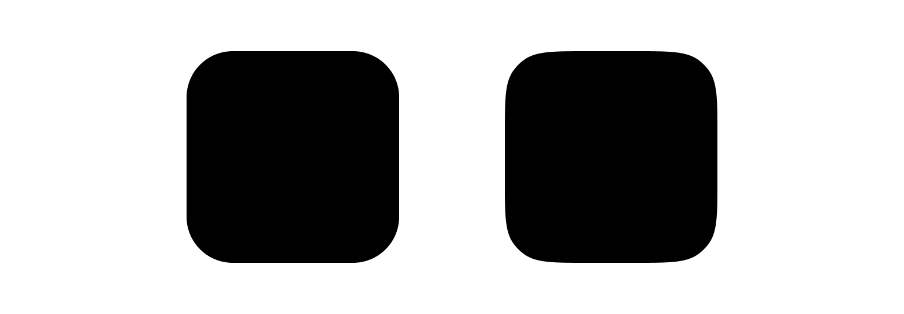
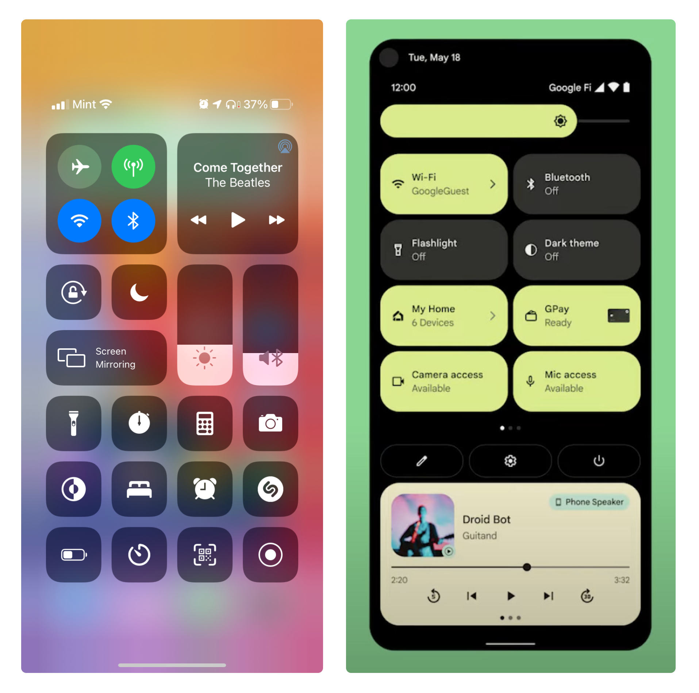

What exactly is border radius anyways?
Border-radius, sometimes called corner-radius, is pretty simple, it just rounds
the corners of a rectangle or some other shape. This can be done fairly easily
by placing 4 circles at the corners, like this:
The Problem
The picture looks fairly straight-forward, and doesn't seem to be problematic, but lets
zoom in of one of the corners. you can see at the parts were the square and circles connect,
it seems kind of sharp, or at least not completely smooth like it should be.

Okay, maybe it's not that noticable, but you can tell where the line changes from being straight
to being curved.
Now this graph is really non-scientific, but does a good job of showing the curvature
as you go from the sides of the square to the corner and to the straight sides again.
It's this sudden jump from being completely straight to being curved that causing the weird-ness.
The Solution
Look at these two squares here, the first one is just our regular non-smooth rounded-rectangle,
but the second one seems smoother, somehow.

Using the previous non-scientific curvature graph for the second shape would look something like this:
To see how I made the second shape, lets look at how we can graph a circle. The equation for a circle would
be x2+y2=r2 with r being the radius.
Now if we increase the exponent to something like 4, this is what shows.
Hurray! 🎉 Now we have some nice and smooth rectangles, also called squircles, also called superellipses.
Now you know this bit of knowledge, how do you actually
use it? Sadly, you can't really in most places. Stuff like css just doesn't support this type of border-radius
yet. I can show you how I made these pictures tho. In figma, you can click the expand button on the
border radius, and then click the 3 dots, and increase the smoothness.
Lets look at some good examples of the smooth corners in use, here is a comparasion of iOS and Android 12.

Both of these look great in my opinion, but you can really see how the smooth iOS corners make the Android
buttons and controls look jagged in comparison.